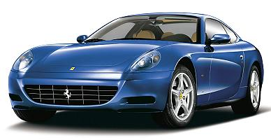

 The 612 Scaglietti emerged late in 2003 as the long awaited successor to the 456 GT, a traditional Ferrari four-seater grand tourer, with a front mounted V12 and rear wheel drive. Apart from this, though, little has remained the same.
The new (and rather controversial) design from Pininfarina, which has a Cx of 0.33, covers an all aluminium chassis and body, which makes a significant reduction in weight for a similar sized car possible, the new car being around 60kg lighter than the much smaller car it replaces. Instead of bonding, the various aluminium parts are rivetted and welded together. Inside the aluminium theme also comes through, with certain areas left uncovered by the plush leather trim, as well as certain controls being from the same material.
Underneath the body lurks a mid-front engine layout, where the engine is pushed as far back as possible to give a good weight distribution (54% at the rear). That engine is drived from the 575 unit and is an all aluminium, quad cam 48 valve 5.7-litre V12 with 533bhp. Which makes the 612 a very rapid car. Brembo ventilated and drilled brakes all round, coupled with the latest Bosch ABS provide the anchors.
Drive is either through a conventional
manual 6-speed box, or a clutchless semi-automatic option (known as
F1A) with steering wheel mounted paddles to change with. Located at the
rear, the transmission also incorporates a limited slip differential.
|
|
Technical Details
| Engine | 5748cc 65deg V12 48v dohc (per bank) with 533bhp @ 7,250rpm |
| Suspension | front : double wishbones and coil springs
rear : double wishbones and coil springs Adaptive damping with electronic control. 8x18 (front) and 10x19 (rear) wheels |
| Brakes | ventilated discs all round with Brembo callipers, servo assistance and ABS |
| Transmission | 6 speed manual, hydraulically actuated with steering-wheel control optional |
| Steering | rack and pinion with power assistance. |
| Weight | 1,840kg |
Performance
| model | max speed | 0-100 km/h | standing km |
| 612 Scaglietti | 320 km/h | 4.2 sec | 22 sec |